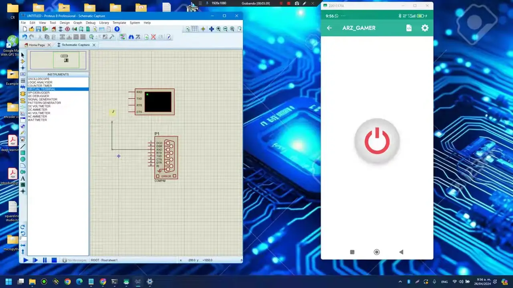

Escribe Bluetooth en el menú de Windows y abre la configuración. Baja casi al final y entra a Más opciones de configuración de Bluetooth.
El celular ya debe estar emparejado por Bluetooth con el computador.
Con un puerto COM de Bluetooth el celular se comunica con el computador como si fuera un puerto serial. Sirve para probar en Proteus un circuito con microcontrolador que se maneja desde el celular (un LED, un carrito, un motor). Se crea el puerto entrante en Windows, se configuran los botones de una app de control Bluetooth y se ven los datos en Hércules y en Proteus.

Escribe Bluetooth en el menú de Windows y abre la configuración. Baja casi al final y entra a Más opciones de configuración de Bluetooth.
El celular ya debe estar emparejado por Bluetooth con el computador.
En la pestaña Puertos COM pulsa Agregar y elige Entrante (el celular es el que se conecta al computador). Windows crea un puerto COM nuevo.
En Hércules, pestaña Serial, elige el COM creado y pulsa Open. Si el puerto no está abierto, el celular pierde la conexión.
En la app elige el computador y entra al modo LED. En la configuración escribe lo que manda el botón en On y en Off, por ejemplo LED1 ON y LED1 OFF.
Usa varios caracteres en vez de una sola letra (a, b): con ruido un carácter se altera y una a se puede convertir en b.
Al presionar el botón, en Hércules aparecen LED1 ON y LED1 OFF: el celular ya está comunicado con el computador. Cierra Hércules para liberar el puerto antes de usarlo en Proteus.
Pon un COMPIM, doble clic y elige el mismo COM, a 9600 baudios tanto en el lado físico como en el virtual.
En Instrumentos agrega un Virtual Terminal. Aquí la conexión no es cruzada: RX del COMPIM con RX del terminal. Con un micro, su RX iría a ese mismo pin para leer la orden.
Dale Play a Proteus, reconecta la app si se desconectó y los datos del celular aparecen en el terminal. Con un micro puedes encender un LED, mover un motor o controlarle la velocidad.